Wałbrzych, ul. Wrocławska 29
Tapicer samochodowy w Wałbrzychu
Marek Jagielski
Przetarty fotel, opadająca podsufitka lub wytarta kierownica? Naprawiamy i szyjemy tapicerkę samochodową, przywracając wnętrzu auta estetyczny wygląd i wygodę użytkowania. Zajmujemy się także dachami kabrioletów i siedzeniami motocyklowymi.
Zakład znajduje się przy ul. Wrocławskiej 29 w Wałbrzychu, naprzeciwko salonu BLACK RED WHITE.
Zapytaj o tapicerkę samochodowąCo robimy w samochodach
Fotele i kanapy
Wymieniamy przetarte lub pęknięte boczki, uzupełniamy piankę i obszywamy fotele tkaniną lub skórą. Zakres prac może obejmować pojedynczy uszkodzony element albo całe obicie fotela czy kanapy.
Tapicerka drzwi
Wykonujemy nowe obicia boczków drzwi i listew progowych. Materiał i kolor dopasowujemy do tapicerki foteli oraz wyglądu wnętrza.
Podsufitki i wykładziny
Wymieniamy opadające podsufitki i wykonujemy nowe wykładziny podłogowe. To sposób na odnowienie zużytych powierzchni, które zajmują dużą część wnętrza auta.
Kierownice i mieszki zmiany biegów
Obszywamy skórą wytarte kierownice i szyjemy nowe mieszki dźwigni zmiany biegów. Odnawiamy elementy, z których kierowca korzysta przy każdej jeździe.
Deska rozdzielcza
Obszywanie deski rozdzielczej skórą.
Dachy kabrioletów
Szyjemy nowe dachy i naprawiamy istniejące poszycia. Opisz uszkodzenie i podaj model samochodu, aby omówić zakres potrzebnych prac.
Wnętrza po tuningu
Tapicerka do aut przerabianych według pomysłu właściciela.
Siedzenia motocyklowe
Obszywanie siedzeń skórą.
Realizacje
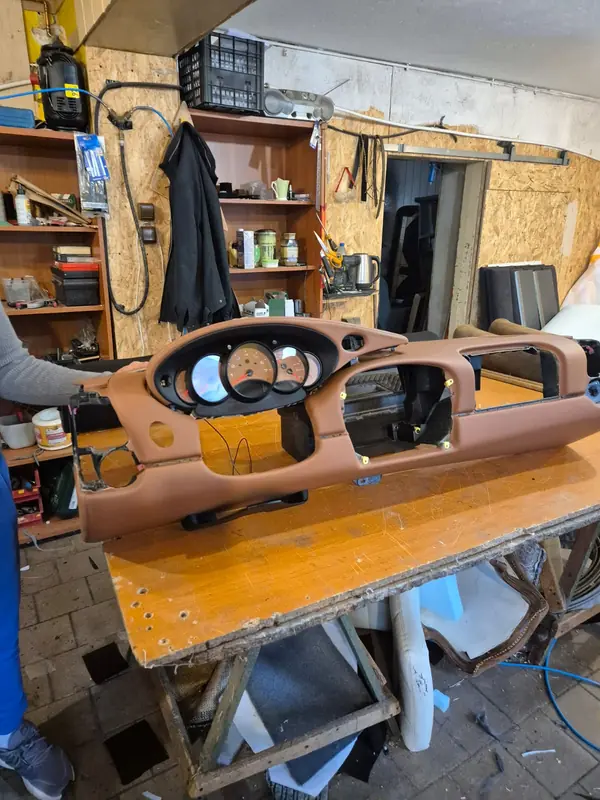
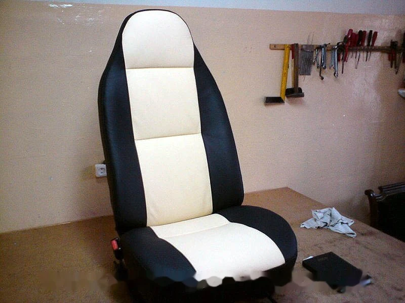
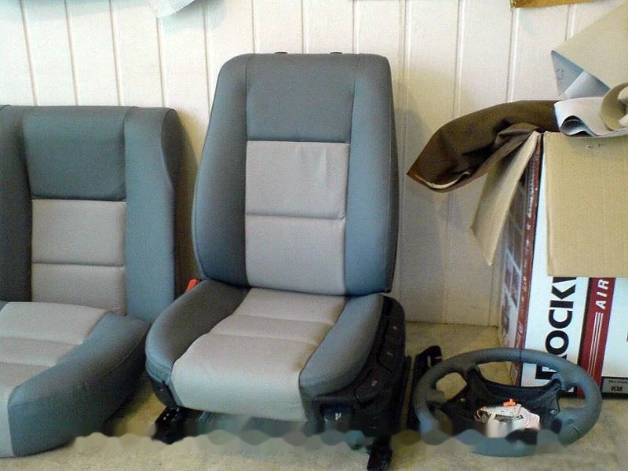
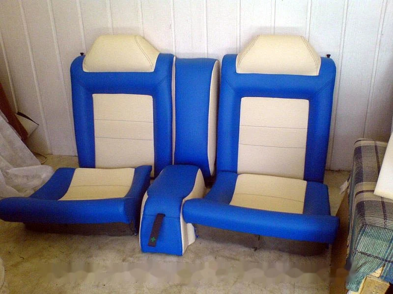
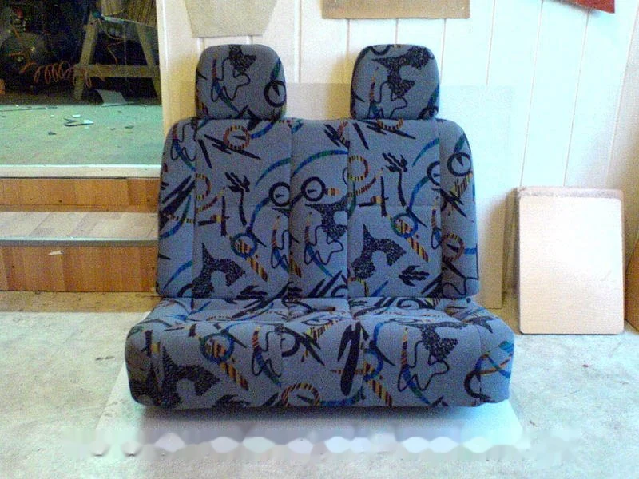
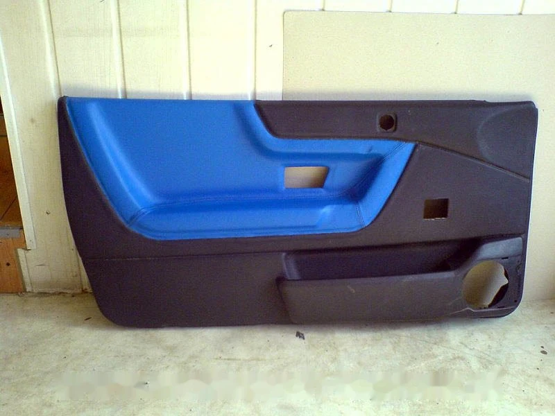
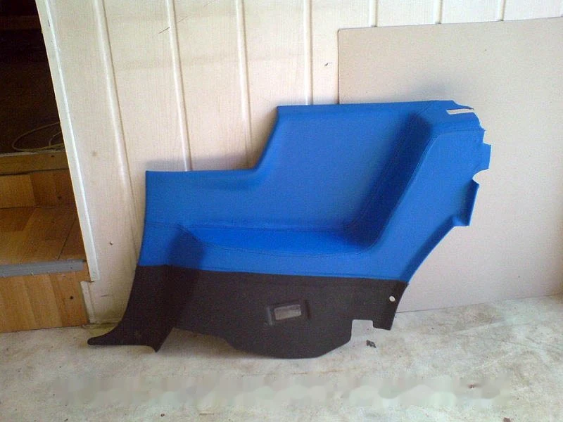
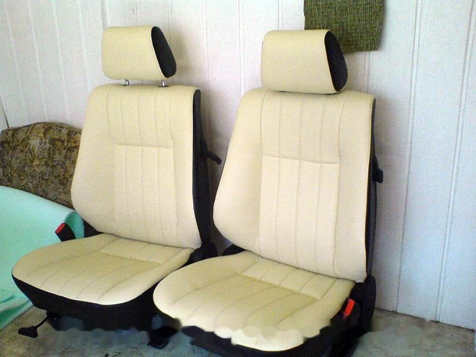
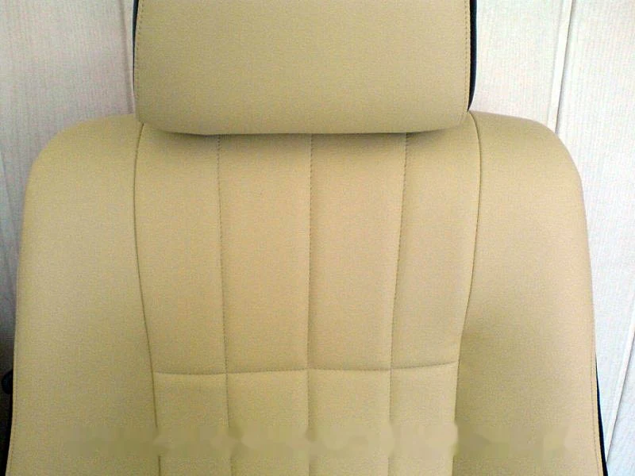
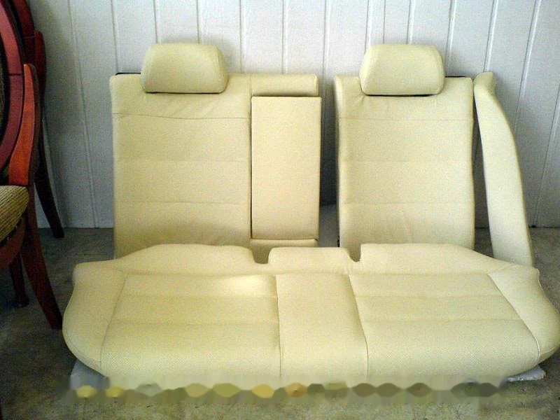
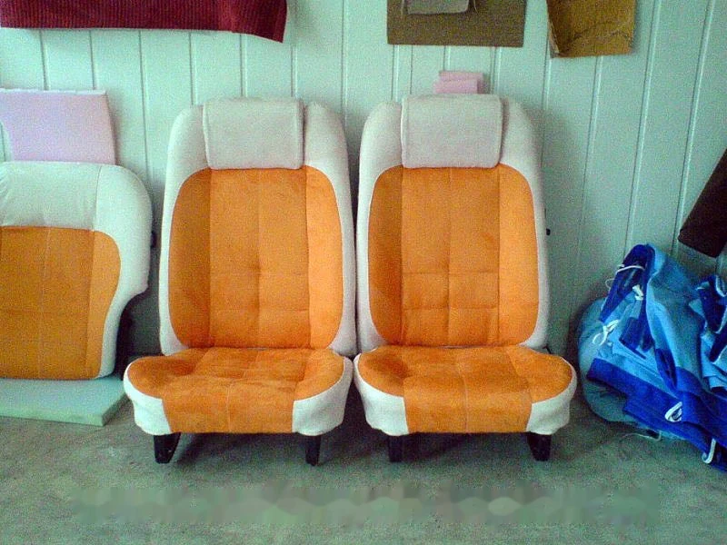
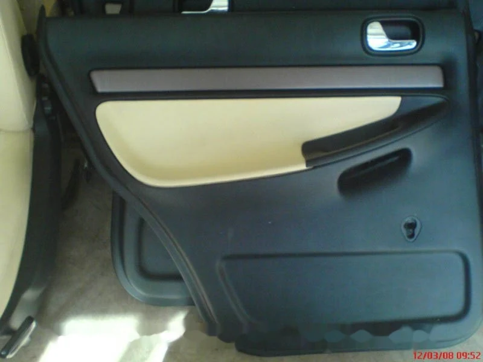
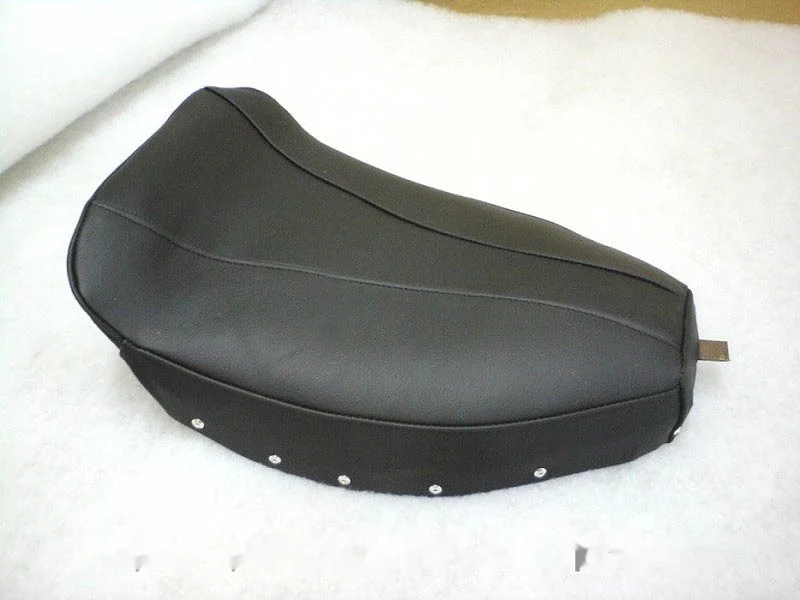
Przed naprawą tapicerki
Czy można naprawić tylko fragment fotela?
Tak, wykonujemy również naprawy pojedynczych elementów, takich jak przetarty boczek. Zakres naprawy zależy od stanu obicia i wypełnienia. Zdjęcie całego fotela oraz zbliżenie uszkodzenia pomogą omówić potrzebne prace.
Od czego zależy cena tapicerki samochodowej?
Na cenę wpływają rodzaj elementu, rozmiar uszkodzenia, stan wypełnienia i wybrany materiał. Przy zapytaniu podaj markę i model auta oraz opisz, co wymaga naprawy.
Co przygotować do zapytania?
Zrób zdjęcie całego elementu i zbliżenie uszkodzonego miejsca. Podaj markę, model i rocznik auta oraz napisz, czy chodzi o naprawę obicia, wymianę wypełnienia czy zmianę wyglądu. Zdjęcia możesz przesłać na spierzak1@wp.pl.
Opinie o tapicerce samochodowej
„Rok temu wymieniany miałem boczek skórzany w fotelu kierowcy mojego auta. Usługa wykonana kompleksowo, naprawa profesjonalna, po roku nie widać śladów zużycia. Polecam.”
„Fotel kierowcy kia ceed 2 zrobiony jak Nowy. Polecam.”
Zapytaj o tapicerkę auta
Opisz uszkodzenie, podaj model auta i prześlij zdjęcia na adres e-mail zakładu. Możesz też zadzwonić, aby omówić planowaną naprawę.
Wyznacz trasę w Google Maps- Telefon
- 697 981 075
74 840 13 66 - spierzak1@wp.pl
- Adres
- 58-306 Wałbrzych
ul. Wrocławska 29
naprzeciwko salonu BLACK RED WHITE - Godziny
- poniedziałek – piątek 9:00–17:00
soboty 9:00–13:00